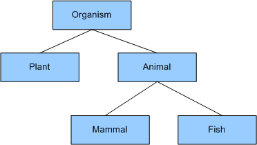
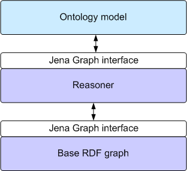
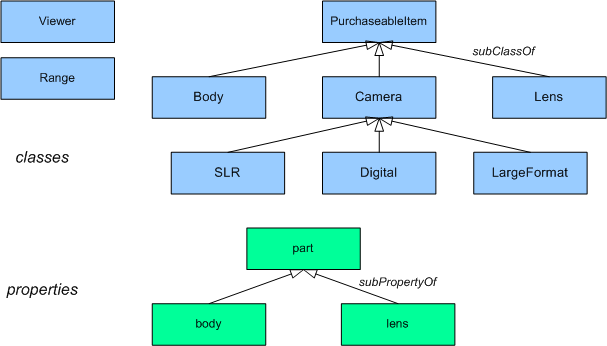
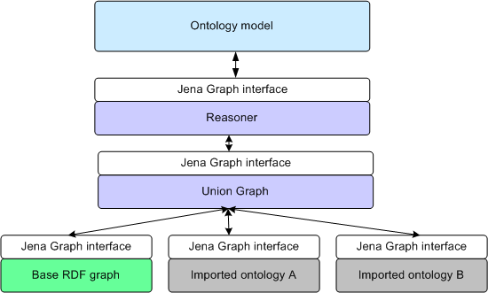
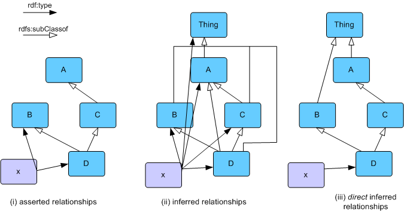

This section describes the Jena2 ontology API in detail, and covers a range of common user tasks. Not all of the fine details of the API are covered here: the reader should expect to refer to the Jena2 Javadoc to get the full details of the capabilities of the API.
Note that this is a preliminary version of this document. Readers should expect that some errors or inconsistencies are possible, and that feedback to the author (via the jena-dev support list) is welcomed.
A basic familiarity with RDF and with Jena is assumed; these topics are covered in other documentation if required (see the Jena tutorial, for example). Jena is a programming toolkit, using the Java programming language. Familiarity with Java programming is also assumed, and is not covered by this documentation.
The section of the manual is broken into a number of sections. It is not necessary to read them in sequence, though later sections may refer to concepts and techniques introduced in earlier sections. The sections are:
We hope that this documentation will be sufficient to help most readers to get started using the Jena ontology API. For further support, please post questions to the Jena support list: jena-dev@yahoogroups. Bugs may be entered directly into the Jena bug tracker on SourceForge.
Please note that we prefer that users utilise the support list or the bug-tracker to communicate with the Jena team, rather than emailing the team members directly.
In a widely-quoted definition, an ontology is
"... a specification of a conceptualization" [Gruber, T. 1993]
Roughly translated, this means that an ontology allows a programmer to specify, in an open, meaningful, way the concepts and relationships that collectively characterise some domain. Examples might be the concepts of red and white wine, grape varieties, vintage years, wineries and so forth that characterise the domain of 'wine', and relationships such as 'wineries produce wines', 'wines have a year of production'. This wine ontology might be developed initially for a particular application, such as a stock-control system at a wine warehouse. As such, it may be considered similar to a well-defined database schema. The advantage to an ontology is that it is an explicit, first-class description. So having been developed for one purpose, it can be published and reused for other purposes. For example, a given winery may use the wine ontology to link its production schedule to the stock system at the wine warehouse. Alternatively, a wine recommendation program may use the wine ontology, and a description (ontology) of different dishes to recommend wines for a given menu.
There are many ways of writing down an ontology, and a variety of opinions as to what kinds of definition should go in one. In practice, the contents of an ontology are largely driven by the kinds of application it will be used to support. In Jena, we do not take a particular view on the minimal or necessary components of an ontology. Rather, we try to support a variety of common styles of use. This manual explains what is (and to some extent what isn't) possible using Jena's ontology support.
Since Jena is, at heart, an RDF platform, we restrict ourselves to ontology formalisms built on top of RDF. Specifically this means RDFS, the varieties of OWL and DAML+OIL. We provide a very brief introduction to these languages here. Readers should refer to the copious on-line documentation for these formalisms for complete (and authoritative) detail.
RDFS is the weakest ontology language supported by Jena. RDFS allows the ontologist to build a simple hierarchy of concepts, and a hierarchy of properties. Consider the following trivial characterisation (with apologies to biology-trained readers):

Table 1: A simple concept hierarchy
Using RDFS, we can say that our ontology has five classes, and that Plant is a sub-class of Organism and so on. So every animal is also an organism. A good way to think of these classes is as describing sets of individuals: organism is intended to describe a set of living things, some of which are animals (i.e. a sub-set of the set of organisms is the set of animals), and some animals are fish (a subset of the set of all animals is the set of all fish).
To describe the attributes of these classes, we can associate properties with the classes. For example, animals have sensory apparatus (noses, eyes, etc.). A general property of an animal might be numSenseOrgans, to denote the number of sensory organs a particular animal has. In general, fish have eyes, so a fish might have a numEyes property. Since eyes are a type of sensory organ, we can capture this relationship between these properties by saying that numEyes is a sub-property-of numSenseOrgans. Thus if a given fish has two eyes, it also has two sense organs. (It may have more, but we know that it must have two). Associating a property with a class is achieved by stating the the property has a given class as its domain, or a given class as its range. Either or both declarations may be given for a given property. For the numEyes example, the domain is Fish and the range is integer.
Describing this simple hierarchy is possible with RDFS. The class hierarchy is not a tree (i.e. not like Java), so a slime mold might be approximated as both a plant and an animal by having both classes among its super-classes. We cannot, in RDFS, state that a thing cannot be a plant and an animal (which is lucky for the slime molds). We can only name the classes, we cannot construct expressions to describe interesting classes. However, for many applications it is sufficient to state the basic vocabulary, and RDFS is perfectly well suited to this.
Note also that we can both describe classes (and their properties), in general terms, and we can describe particular instances of those classes. So there may be a particular individual Fred who is a Fish (i.e. has rdf:type Fish), and who has two eyes. His companion Freda, owing to an unfortunate accident, has only one eye. One use of the ontology is to allow us to fill-in missing information about individuals. Thus, though it is not stated directly, we know that Fred is also an Animal and an Organism. Assume that there was no rdf:type asserting that Freda is a Fish. We may still infer Freda's rdf:type since Freda has numEyes = 1, and in our example the domain of numEyes is Fish - so Freda must be a Fish.
In general, OWL allows us to say everything that RDFS allows, and much more besides. A key part of OWL is the ability to describe classes in more interesting and complex ways. For example, in OWL we can say that Plant and Animal are disjoint classes: no individual can be both a plant and an animal (thus making the poor SlimeMold an empty class). Saltwater fish might be the intersection of Fish and the class SeaDwellers (which also includes, for example, cetaceans and sea plants).
Suppose we have a property hasCovering, intended to represent the scales of a fish or the fur of a mammal. We can now refine the mammal class to be 'animals that have a covering that is hair', using a property restriction to express the condition that property hasCovering has a value from the class Hair. Similarly TropicalFish might be the intersection of the class of Fish and the class of things that have TropicalOcean as their habitat.
Finally (for this brief overview), we can say more about properties in OWL. In RDFS, properties can be related via a property hierarchy. OWL extends this by allowing properties to be denoted as transitive, symmetric or functional, and allow one property to be declared to be the inverse of another. OWL also makes a distinction between properties that have data-values (aka literals in RDF terminology) as their range, or other individuals. Since the domains of properties in RDF are always individuals (AKAresources in RDF terminology), this distinction is important since only individual-valued properties, called object properties in OWL can be transitive or symmetric.
The OWL language is divided into three syntax classes: OWL Lite, OWL DL and OWL Full. OWL DL does not permit some constructions allowed in OWL Full, and OWL Lite has all the constraints of OWL DL plus some additional constructions that are not permitted. The intent for OWL Full and OWL DL is to make the task of reasoning with expressions in that subset more tractable. Specifically, OWL DL is intended to be able to be processed efficiently by a description logic reasoner, and OWL Lite by a variety of reasonably simple inference algorithms.
While the OWL standards documents note that OWL builds on top of the (revised) RDF specifications, it is possible to treat OWL as a separate language in its own right, and not something that is built on an RDF foundation. This view uses RDF as a serialisation syntax; the RDF-centric view treats RDF triples as the core of the OWL formalism. While both views are valid, in Jena we take the RDF-centric view.
DAML+OIL is very similar to OWL Full. This is not surprising, since the W3C's Web Ontology Working Group, who designed OWL, took DAML+OIL as their starting point. Some constructions in OWL have been added to the capabilities of DAML+OIL, and one or two have been removed. For the purposes of this brief overview, however, the expressiveness of DAML+OIL is comparable to that of OWL.
Version 1 of Jena had a set of API classes for manipulating ontology information in DAML+OIL (OWL had not yet been invented when Jena 1 was developed). The Jena 1 DAML API (henceforth we abbreviate DAML+OIL to DAML) had very little support for reasoning with the semantics of the DAML language. For Jena 2, we wanted a more general capability that would handle a variety of similar languages (specifically, RDFS, DAML and the OWLs), and would work well with Jena 2's new inference capabilities. The ontology API in Jena is the result.
Whereas in the old DAML API, the Java classes were tightly bound to the language being processed (e.g. DAMLClass, DAMLObjectProperty, etc.), the ontology API is language-neutral (thus the classes are now OntClass and ObjectProperty). To support this, each of the languages has a profile, which lists the permitted constructs and the URI's of the classes and properties. Thus in the DAML profile, the URI for object property is daml:ObjectProperty, in the OWL profile is it owl:ObjectProperty and in the RDFS profile it is null since RDFS does not define object properties.
The profile is bound to an ontology model, which is an extended version of Jena's Model class. The general Model allows access to the statements in a collection of RDF data. OntModel extends this by adding support for the kinds of objects expected to be in an ontology: classes (in a class hierarchy), properties (in a property hierarchy) and individuals. The properties defined in the ontology language map to accessor methods. For example, an OntClass has a method to list its super-classes, which corresponds to the values of the subClassOf property. This point is worth emphasizing: no information is stored in the OntClass object itself. When the OntClass listSuperClasses() method is called, the information is retrieved from the underlying RDF statements. Similarly adding a subclass to an OntClass asserts an additional RDF statement into the model.
The statements that the ontology Java objects see depend on both the asserted statements in the underlying RDF graph, and the statements that can be inferred by the reasoner being used (if any). Consider Figure 2:

Figure 2: the statements seen by the OntModel
The asserted statements are held in the base graph. This presents a simple internal interface, Graph. The reasoner, or inference engine, can use the contents of the base graph and the semantic rules of the language, to show a more complete set of statements - i.e. including those that are entailed by the base assertions. This is also presented via the Graph interface, so the model works only with that interface. This allows us to build models with no reasoner, or with one of a variety of different reasoners, without changing the ontology model. It also means that the base graph can be an in-memory store, a database-backed persistent store, or some other storage structure altogether (e.g. an LDAP directory) again without affecting the ontology model.
Consider the following RDF sample:
<rdfs:Class rdf:ID="DigitalCamera">
</rdfs:Class>
This declares that the resource with the (relative) URI #DigitalCamera is an ontology class. It might be appropriate to model declaration in Java with an instance of an OntClass. Now suppose we augment the class declaration with some more information:
<rdfs:Class rdf:ID="DigitalCamera">
<rdf:type owl:Restriction />
</rdfs:Class>
Now we are saying that #DigitalCamera is an OWL Restriction (which is a subclass of rdfs:Class, so this is a perfectly consistent operation). The problem we have is that Java does not allow us to dynamically change the Java class of the object modeling this resource. The resource has not changed: it still has URI #DigitalCamera. But the appropriate Java class we might choose to model it has changed from OntClass to Restriction. Conversely, if we remove the rdf:type Restriction from the model, the use of a Restriction Java class is no longer appropriate.
Even worse, OWL Full allows us the following (rather counterintuitive) construction:
<rdfs:Class rdf:ID="DigitalCamera">
<rdf:type owl:ObjectProperty />
</rdfs:Class>
That is, #DigitalCamera is now a class and a property. While this may not be a very useful operation, it illustrates a basic point that we cannot rely on a consistent or unique mapping between an RDF resource and the appropriate Java abstraction. In the Jena1 DAML API, we attempted to determine the most-specific Java class for a given DAML object, and create one an instance of that class to model the DAML resource. While having some advantages, this scheme was very brittle and it was easy to construct cases in which it failed.
Jena 2 accepts this basic characteristic of polymorphism at the RDF level by considering that the Java abstraction (OntClass, Restriction, DatatypeProperty, etc.) is just a view or facet of the resource. Given a RDF object (i.e. an instance of com.hp.hpl.jena.rdf.model.RDFNode or one of its many subclasses), we can get a new facet with the as() method. For example:
Resource r = myModel.getResource( myNS + "DigitalCamera" );
OntClass cls = (OntClass) r.as( OntClass.class );
Restriction rest = (Restriction) cls.as( Restriction.class );
This pattern allows us to defer until run-time decisions about the correct Java abstraction to use, and make this choice depend on the properties of the resource itself. If a given RDFNode will not support the conversion to a given facet, it will raise an exception. The rather clumsily named canAs() allows a programmer to test whether the as() conversion would work for a given resource.
This RDF-level polymorphism is used extensively in the Jena ontology API to allow maximum flexibility in handling ontology data.
To illustrate the principles of using the Ontology API, we use examples drawn from a Roger Costello's camera ontology. This ontology arose from a discussion, started by Roger Costello on the RDF mailing lists, about a clear comprehensible example of what was possible with OWL. A copy of the ontology serialized in RDF/XML is included with the Jena download [here].
The camera ontology contains a set of classes describing some aspects of the domain of still-picture cameras, as shown in Figure 3:

Figure 3: Classes and properties from camera ontology
We will use elements from this ontology to illustrate the ontology API throughout this manual.
An ontology model is an extension of the Jena RDF model that provides extra
capabilities for handling ontology data sources. Ontology models are created
through the Jena ModelFactory.
The simplest way to create an ontology model is as follows:
OntModel m = ModelFactory.createOntologyModel();
Since the ontology model is customisable in a number of different ways, this version uses defaults for all of the various parameters. In particular, it uses OWL Full as the ontology language, selects a default reasoner, and assumes that all of the ontology data will be stored in-memory.
To create an ontology model for a particular language, but leaving all of the other values as defaults, specify the URI of the ontology language to the model factory. The URI's for the various language profiles are:
|
Ontology language |
URI |
|---|---|
| RDFS |
http://www.w3.org/2000/01/rdf-schema#
|
| DAML+OIL |
http://www.daml.org/2001/03/daml+oil#
|
| OWL Full |
http://www.w3.org/2002/07/owl#
|
| OWL DL |
http://www.w3.org/TR/owl-features/#term_OWLDL
|
| OWL Lite |
http://www.w3.org/TR/owl-features/#term_OWLLite
|
These URI's are used to look-up the language profile from the ProfileRegistry.
Helpfully, the profile registry contains declared constants that mean that these
URI's do not have to be remembered. In particular, the URI's denoting OWL Lite
and OWL DL are not officially sanctioned by the WebOnt working group, so may
change in future.
To create an ontology model for handling DAML ontologies, use:
OntModel m = ModelFactory.createOntologyModel( ProfileRegistry.DAML_LANG );
Beyond these simple choices, the complexity of configuring an ontology model
is wrapped up in a recipe object called OntModelSpec.
This specification allows complete control over the basic behaviour of the ont
model, including the language profile in use, the reasoner, and the means of
handling compound documents. Most conveniently, a number of common recipes are
pre-declared as constants in OntModelSpec. For example:
OntModelSpec.OWL_MEM
OntModelSpec.OWL_MEM_RDFS_INF
The first of these is describes a model using the OWL Full profile, an in-memory storage model, and no reasoner. The second adds a rule-based reasoner that will add the entailments from the source data using the semantic rules of RDFS only. This will include entailments from subclass and sub-property hierarchies, and domain and range constraints, but not, for example, entailments from the disjoint-ness of classes. For details of reasoner capabilities, see the inference documentation and the Javadoc for OntModelSpec, which contains a complete listing of pre-defined model specs and their reasoners. Note that future versions of Jena2 are likely to have a more flexible means of specifying the reasoner to use with a given ontology model, so this is one area in which the current API is expected to change.
Note: it is the choice of reasoner, not the choice of language profile that determines which entailments are seen by the ontology model. Obviously, using the OWL reasoner with DAML source data will result in few additional entailments being seen by the ontology model.
To create a model with a given specification, invoke the ModelFactory
as follows:
OntModel m = ModelFactory.createOntologyModel( OntModelSpec.OWL_MEM, null );
The significance of the second (null) parameter will be explained below.
To create a custom model specification, we can create a new one from scratch and call the various methods to set the appropriate values. More often, we want only a variation on an existing recipe. In this case, we copy an existing specification and then update the copy as necessary:
OntModelSpec s = new OntModelSpec( OntModelSpec.OWL_MEM );
s.setDocumentManager( myDocMgr );
OntModel m = ModelFactory.createOntologyModel( s, null );
We use the term document to describe an ontology serialize to some
transport syntax, such as RDF/XML or N3. We load an ontology document into an
ontology model in the same way as a normal Jena model, using the read
method. There are several variants on read, that handle differences in the source
of the document (to be read from a resolvable URL or directly from an input
stream or reader), the base URI that will resolve any relative URI's in the
source document, and the serialisation language. In summary, these variants
are:
read( String url )
read( Reader reader, String base )
read( InputStream reader, String base )
read( String url, String lang )
read( Reader reader, String base, String Lang )
read( InputStream reader, String base, String Lang )
Any of these methods can be used to load an ontology document. Note that it is suggested that the read variants that use java.io.Reader are avoided when loading XML documents containing internationalised character sets, since the handling of character encoding by the Reader, and the handling of character encoding by XML parsers is not compatible.
Beyond the capability of simply reading documents, the ontology model adds some additional capabilities. First, note that in OWL and DAML+OIL, it is possible for ontologies to be treated as reusable modules and imported into different documents. An OWL or DAML document may contain an individual of class Ontology, which contains meta-data about that document itself:
<owl:Ontology rdf:about="">
<dc:creator rdf:value="Ian Dickinson" />
<owl:imports rdf:resource="http://jena.hpl.hp.com/example-ont" />
</owl:Ontology>
The construct rdf:about="" is a relative URI that will resolve to the document's base URI: in other words it's a shorthand way of referring to self. The owl:imports line (an equivalent term exists for DAML) states that this ontology is constructed using terms (i.e. classes and properties) from the given ontology. In order to properly evaluate the terms in this ontology, we should have available the terms from the imported source.
The ontology DocumentManager
is a helper class for OntModel that assists with handling such
imports. Before discussing it further, we need to update Figure 2 to show how
imported documents are handled:

Figure 4: ontology internal structure including imports
We see that each imported ontology document is held in a separate graph structure. This is important: if we did not do this, once the imports had been processed it would be impossible to know where a statement came from. This was in fact the case with the Jena 1 DAML API, and this new design eases the considerable problems this caused. When this structure is built by the ontology model (processing the imports is handled automatically by the document manager), the original or base graph has a distinguished role. It is this graph that is updated when statements are added to, or removed from, the ontology model. It is also this graph whose contents are serialize when the model is written.
Imports are processed recursively, so if our base document imports ontology A, and A imports B, we will end up with the structure shown in Figure 4. The occurs check is used to prevent the document manager getting stuck if B also imports A!
Each ontology model has an associated document manager that assists with the processing and handling of ontology documents. For convenience, there is one global document manager that is used by default by ontology models. This shared instance is accessible via OntDocumentManager.getInstance(). In many cases, it will be sufficient to simply change the settings on the global document manager to suit a given application's needs. However, for more fine-grain control, separate document managers may be constructed and passed to the ontology model when it is created through the model factory. This is achieved by creating (or adapting) an ontology specification object, and setting the document manager attribute, for example:
OntDocumentManager mgr = new OntDocumentManager();
// set the mgr's properties now ... OntModelSpec s = new OntModelSpec( OntModelSpec.RDFS_MEM ); s.setDocumentManager( mgr ); OntModel m = ModelFactory.createOntologyModel( s, null );
Note that the model retains a reference to the document manager it was created with. Thus changing a document manager's properties will affect models that have previously been constructed with that document manager.
Since the document manager has a large number of configurable options, there are two ways in which it can be customised to application requirements. Firstly, the individual parameters of the document manager can be set by Java code. Alternatively, when a given document manager is created it can load values for the various parameters from a policy file, expressed in RDF. The document manager has a list of URL's on which it will search for a policy document. It will stop at the first entry on the list that resolves to a retrievable document. The default search path for the policy is: file:etc./ont-policy.rdf;file:ont-policy.rdf. Thus the default policy, which can serve as a template for user-defined policies, can be found in the etc./ directory under the Jena download directory.
General properties of the document manager are set in the policy as properties on a DocumentManagerPolicy object as follows:
<DocumentManagerPolicy>
<!-- policy for controlling the document manager's behaviour -->
<processImports rdf:datatype="&xsd;boolean">true</processImports>
<cacheModels rdf:datatype="&xsd;Boolean">true</cacheModels>
</DocumentManagerPolicy>
The (simple) ontology that declares the various properties that can be used in such a policy is available in the vocabularies directory in the Jena download, see ont-manager.rdf.
To change the search path that the document manager will use to initialise itself, either pass the new search path as a string when creating a new document manager object, or call the method setMetadataSearchPath.
In order for the document manager to build the union of the imported documents
(which we refer to as the imports closure), it must be able to create
new graphs to store the imported ontologies. A parameter of the document manager
is its model maker. The model maker is a simple interface that allows
different kinds of models (in memory, from file, in persistent database, etc.)
to be built on demand. For the database case, this may include passing the database
user-name and password and other connection parameters. New model makers can
be created via ModelFactory.
The default specifications in OntModelSpec that begin MEM_ use an in-memory
model for the base model, and use a memory model maker to store the imported
ontologies in in-memory models.
Note: internally to Jena, we use the Graph as a primary data structure.
However, user code will almost always refer to models, not graphs. A model wraps
a graph, and provides convenience methods for accessing the contents of the
graph. Hence Figure 4, above, refers to a structure containing graphs, but we
use a ModelMaker
to generate new stores. The document manager extracts the appropriate graph
from the containing model.
To load an ontology without building the imports closure, call the method setProcessImports( false ) on the document manager object, or set the processImports property in the policy file. To be more selective, it is possible to ignore certain URI's when loading the imported documents. Call the method addIgnoreImport( String uri ) on the document manager object, or set the ignoreImport property in the policy.
A strength of working with ontologies is that we can reuse work done by other ontologists by importing their published ontologies. Often, however, this means that the ontology is only retrievable by traversing an Internet firewall. Even if this is possible, by using an HTTP proxy, it may impose unacceptable delay in loading an application. In the worst case, an ontology on which our application depends is temporarily or permanently unavailable from the original published URL. To assist with this common problem, the ontology document manager allows a local indirection, so that an attempt to import a document from a given published URL means that a local copy of the document is retrieved instead. This may be a file copy or simply duplicated on an internal mirror web site.
To specify this local redirection in the policy file, we use the following declarations:
<OntologySpec>
<!-- local version of the RDFS vocabulary -->
<publicURI rdf:resource="http://www.w3.org/2000/01/rdf-schema" />
<altURL rdf:resource="file:vocabularies/rdf-schema.rdf" />
<language rdf:resource="http://www.w3.org/2000/01/rdf-schema" />
<prefix rdf:datatype="&xsd;string">rdfs</prefix>
</OntologySpec>
This specifies that an attempt to load the RDFS vocabulary from http://www.w3.org/2000/01/rdf-schema will transparently cause file:vocabularies/rdf-schema.rdf to be fetched instead. Any number of such re-directions may be specified in the policy file, or they can be added to the document manager object directly by calling the various 'add' methods (see the Javadoc for details). As a side-effect, this mechanism also means that ontologies can be named with any legal URI (not necessarily resolvable) - so long as the altURL is itself resolvable.
A model keeps a table of URI prefixes that can be used to render URI's in
the shortened prefix:name form, which is useful in displaying URI's in a readable
way in user interfaces, and is essential in producing legal XML names that denote
arbitrary URI's. The ontology model's table of prefixes can be initialized from
a table kept by the document manager, which contains the standard prefixes plus
any that are declared by in the policy file (or added to subsequently by method
calls). To prevent the model's prefix table from being initialized in this way,
use the property useDeclaredNsPrefixes in the policy file (with
value 'false'), or call the method setUseDeclaredPrefixes on the
ontology object.
The final behaviour that the document manager provides to assist with loading ontology documents is a model cache. Suppose two ontologies, A and B both import ontology C. It would be nice not to have to read C twice when loading A and B. The document manager supports this use case by optionally caching C's model, indexed by C's URI. Then an attempt to import C from B, it previously having been loaded by A, would result in a significant time saving, and a reuse of the same model for C in both A and B.
To turn model caching on or off, use the policy property cacheModels, or call the method setCacheModels( Boolean caching ). The default is caching on. The document manager's current model cache can be cleared at any time by calling clearCache().
In the following example, we programmatically declare that the camera ontology is copied locally, and then load it using the public URL. Assume that the constant JENA has been initialized to the directory in which Jena is installed.
OntModel m = ModelFactory.createOntologyModel();
OntDocumentManager dm = m.getDocumentManager();
dm.addAltEntry( "http://www.xfront.com/owl/ontologies/camera/",
"file:" + JENA + "doc/user-manual/ontology/data/camera.owl" );
m.read( "http://www.xfront.com/owl/ontologies/camera/" );
All of the classes in the ontology API that represent ontology values have
OntResource
as a common super-class. This makes OntResource a good place to
put shared functionality for all such classes, and makes a handy common return
value for general methods. The Java interface OntResource extends
Jena's RDF Resource
interface, so any general method that accepts a resource or an RDFNode
will also accept an OntResource, and consequently, any other ontology
value.
Some of the common attributes of ontology resources that are expressed through methods on OntResource are shown below:
| Attribute | Meaning |
|---|---|
|
versionInfo
|
A string documenting the version or history of this resource
|
|
comment
|
A general comment associated with this value
|
|
label
|
A human-readable label
|
|
seeAlso
|
Another web location to consult for more information about this resource
|
|
isDefinedBy
|
A specialisation of seeAlso that is intended to supply a definition of this resource
|
|
sameAs
|
Denotes another resource that this resource is equivalent to
|
|
differentFrom
|
Denotes another resource that is distinct from this resource (by definition)
|
For each of these properties, there is a standard pattern of available methods:
| Method | Effect |
|---|---|
|
add<property>
|
Add an additional value for the given property
|
|
set<property>
|
Remove any existing values for the property, then add the given value
|
|
list<property>
|
Return an iterator ranging over the values of the property
|
|
get<property>
|
Return the value for the given property, if the resource has one. If not, return null. If it has more than one value, an arbitrary selection is made.
|
|
has<property>
|
Return true if there is at least one value for the given property. Depending on the name of the property, this is sometimes is<property>
|
|
remove<property>
|
Removes a given value from the values of the property on this resource. Has no effect if the resource does not have that value.
|
For example: addSameAs( Resource r ), or isSameAs( Resource r ). For full details of the individual methods, please consult the Javadoc.
OntResource defines some other general utility methods. For example, to find out how many values a resource has for a given property, we can call getCardinality( Property p ). To delete the resource from the ontology altogether, we can call remove(). The effect of this is to remove every statement that mentions this resource as a subject or object of a statement. To get or set the value of a given property, use addPropertyValue( Property p, RDFNode value ) or getPropertyValue( Property p ). Similarly the values of a named property can be listed or removed.
Finally, OntResource provides methods for listing, getting and setting the RDF types of a resource. The rdf:type property is one for which many entailment rules are defined in the semantic models of the various ontology languages. Therefore, the values that listRDFTypes() returns is more than usually dependent on the actual reasoner bound to the ontology model. For example, suppose we have class A, class B which is a subclass of A, and resource x whose asserted rdf:type is B. With no reasoner, listing x's RDF types will return only B. If the reasoner is able to calculate the closure of the subclass hierarchy (and most can), X's RDF types would also include A. Furthermore, complete reasoners might also infer that x has type owl:Thing and rdf:Resource.
For some tasks, getting a complete list of the RDF types of a resource is exactly what is needed. For other tasks, this is not the case. An ontology editor, for example, might want to distinguish in its display between inferred and asserted types. In the above example, only x rdf:type B is asserted, everything else is inferred. One way to make this distinction is to make use of the base model (see Figure 4). Getting the x resource from the base model and listing the type properties there would return only the asserted values.
For other user interface or presentation tasks, we may want something between the complete list of types and the base list of only the asserted values. Consider the following class hierarchy:

Figure 5: asserted and inferred relationships
Figure 5.i shows a base model, containing a class hierarchy and an instance x. Figure 5.ii shows a full set of relationships that might be inferred from this base model. In Figure 5.iii, we see only the direct or maximally specific relationships. For example, in 5.iii x does not have rdf:type A, since this is an relationship that is covered by the facts that x has rdf:type D, and D is a subclass of A. Notice also that the rdf:type B link is also removed from the direct graph, for a similar reason. Thus the direct graph hides relationships from both the inferred and asserted graphs. When displaying instance x in a GUI, particularly in a tree view of some kind, the direct graph is often the most useful as it contains the useful information in the most compact form.
To list the RDF types of a resource, use:
listRDFTypes() // assumes not-direct
listRDFTypes( Boolean direct ) // if true, show only direct relationships
Related methods allow the rdf:type to be tested, set and returned.
Classes are the basic building blocks of an ontology. A simple class is represented
in Jena by an OntClass
object. As mentioned above, a ontology class
is a facet of an RDF resource. One way, therefore, to get an ontology class
is to convert an RDF resource (we assume that m is a suitable defined
OntModel, into which the camera ontology has already been read):
String camNS = "http://www.xfront.com/owl/ontologies/camera/#";
Resource r = m.getResource( camNS + "Camera" );
OntClass camera = (OntClass) r.as( OntClass.class );
This can be shortened by calling getOntClass() on the ontology
model:
OntClass camera = m.getOntClass( camNS + "Camera" );
The getOntClass method will lookup the resource with the given URI, and attempt to obtain the OntClass facet. If either of these operations fail, it will return null. Alternatively, the createClass method will reuse an existing resource, or create a new class resource if one does not exist:
OntClass pinCamera = m.createClass( camNS + "PinholeCamera" );
The create class method can also be used to create an anonymous class - a class description with no associated URI. Anonymous classes are often used when building complex ontologies in OWL or DAML. They are less useful in RDFS.
OntClass anonClass = m.createClass();
Once we have the ontology class object, we can begin processing it through the methods defined on OntClass. The attributes of a class are handled in a similar way to the attributes of OntResource, above, with a collection of methods to set, add, get, test, list and remove values. Class properties that are handled in this way are:
| Attribute | Meaning |
|---|---|
|
subClass
|
A subclass of this class, i.e. those classes that are declared
subClassOf this class.
|
|
superClass
|
A super-class of this class, i.e. a class that this class is a
subClassOf.
|
|
equivalentClass
|
A class that represents the same concept as this class. This is not just having the same class extension: the class 'British Prime Minister in 2003' contains the same individual as the class 'the husband of Cherie Blair', but they represent different concepts.
|
|
disjointWith
|
Denotes a class with which this class has no instances in common.
|
Thus, in our example ontology, we can print a list the subclasses of Camera as follows:
OntClass camera = m.getOntClass( camNS + "Camera" );
for (Iterator i = camera.listSubClasses(); i.hasNext(); ) {
OntClass c = (OntClass) i.next();
System.out.print( c.getLocalName() + " " );
}
The result from this code, incidentally, is Large-Format Digital Camera (the order may vary on different systems). Some readers may be surprised to see Camera appearing as its own subclass This is an entailment of RDFS, which states that all classes are subclasses of themselves. While this is a correct entailment, it is not useful information in many contexts. Future versions of Jena will contain means of selectively ignoring such correct but unhelpful entailments.
OntClass has some other commonly used utilities. To show all of the instances that mention this class as their rdf:type (or one of them), use listInstances(). The domain of a property is intended to allow entailments about the class of an individual, given that it appears as a statement subject. It is not a constraint that can be used to validate a document, in the way that XML schema can do. Nevertheless, many developers find it convenient to use the domain of a property to document the design intent that the property only applies to known instances of the domain class. Given this observation, it can be a useful debugging or display aide to show the properties that have this class among their domain classes. The method listDeclaredProperties() attempts to identify the properties that are intended to apply to instances of this class. With an optional parameter all this method will inspect just the class itself (all = false) or the class and all of its super-classes (all = true).
A property in an ontology model is an extension of the RDF Java class Property,
and allows access to the additional information that can be asserted about properties
in an ontology language The common super-class for representing ontology properties
in Java is OntProperty.
Again, using the pattern of add, set, get, list, has, and remove methods, we
can access the following attributes of an OntProperty:
| Attribute | Meaning |
|---|---|
|
subProperty
|
A sub property of this property; i.e. a property which is declared to be a
subPropertyOf this property. If p is a sub property of q, and we know that A p B is true, we can infer that A q B is also true.
|
|
superProperty
|
A super property of this property, i.e. a property that this property is a
subPropertyOf
|
|
domain
|
Denotes the class or classes that form the domain of this property. Multiple domain values are interpreted as a conjunction. The domain denotes the class of value the property maps from.
|
|
range
|
Denotes the class or classes that form the range of this property. Multiple range values are interpreted as a conjunction. The range denotes the class of values the property maps to.
|
|
equivalentProperty
|
Denotes a property that is the same as this property.
|
|
inverse
|
Denotes a property that is the inverse of this property. Thus if q is the inverse of p, and we know that
A q B, then we can infer that B p A.
|
In the example camera ontology, the property body is a sub-property of part, and has domain Camera and range Body (that is, it maps from instances of cameras to instances of camera bodies). We can reconstruct this definition in an empty ontology model as follows:
OntModel newM = ModelFactory.createOntologyModel();
OntClass Camera = newM.createClass( camNS + "Camera" );
OntClass Body = newM.createClass( camNS + "Body" );
ObjectProperty part = newM.createObjectProperty( camNS + "part" );
ObjectProperty body = newM.createObjectProperty( camNS + "body" );
body.addSuperProperty( part );
body.addDomain( Camera );
body.addRange( Body );
OWL and DAML+OIL refine the basic Property class from RDF into two types: ObjectProperty and DatatypeProperty. The difference between them is that an object property can have only individuals in its range, while a datatype property has concrete data literals (only) in its range. This separation allows the semantic theories for these languages not to have to include the interpretations of the myriad concrete datatypes, arithmetic, and so forth, which would clearly overwhelm what are otherwise quite compact theoretical treatments.
In Jena, the Java interfaces ObjectProperty
and DatatypeProperty
are sub-types of OntProperty. However, they do not have any behaviours
(methods) particular to themselves. Their existence allows the more complex
subtypes of ObjectProperty - transitive properties and so forth - to be kept
separate in the class hierarchy. Creating an object property or datatype property
will have the effect of asserting different rdf:type statements
into the underlying model.
Both DAML+OIL and OWL permit object and datatype properties to be functional
- that is, for a given individual in the domain, the range value will always
be the same. In DAML+OIL, this characteristic is labelled as a unique
property, but the idea is the same. A functional property also has a maximum
cardinality of one. Rather than represent the quality of being functional in
the Java class name (for example FunctionalObjectProperty), we have chosen to
represent the capability of being functional as a flag on the OntProperty
object. Thus, when creating an object or datatype property, there is an optional
Boolean parameter to indicate whether this property is functional. A property
that is functional will also support the facet interface FunctionalProperty.
There are several additional subtypes of ObjectProperty that represent additional
capabilities of ontology properties. A TransitiveProperty
means that if p is transitive, and we know A p B and also B
p C, we can infer that A p C. A SymmetricProperty
means that if p is symmetric, and we know A p B, we can infer B
p A. An InverseFunctionalProperty
means that for any given range element, the domain value is unique. (Note that
in DAML+OIL, the terminology for inverse functional property is unambiguous
property).
Given that all properties are RDFNode objects, and therefore
support the as() method, we can use as() to change
from an object property facet to a transitive property facet. To make this more
straightforward, the OntProperty Java class has a number of methods
that support directly switching to the corresponding facet view:
public TransitiveProperty asTransitiveProperty();
public FunctionalProperty asFunctionalProperty();
public SymmetricProperty asSymmetricPropery();
public InverseFunctionalProperty asInverseFunctionalProperty();
These methods all assume that the underlying model will support this change
in perspective, and so will fail with a ConversionException if
a given property is not, for example, already a transitive property when that
change is attempted. The following will, if necessary, add additional information
(i.e. the additional rdf:type statement) to allow the conversion
to an alternative facet to succeed.
public TransitiveProperty convertToTransitiveProperty();
public FunctionalProperty convertToFunctionalProperty();
public SymmetricProperty convertToSymmetricPropery();
public InverseFunctionalProperty convertToInverseFunctionalProperty();
Finally, methods on the pattern isXXX (e.g. isTransitiveProperty) allow the programmer to test whether a given property is already of a given sub-type.
Previously, we introduced the handling of basic, named classes in the Jena ontology API. These are the only kind of class descriptions defined in RDFS. In DAML+OIL and OWL, however, there are a number of types of additional class expression that allow richer and more expressive descriptions of concepts. There are two main types of additional class expression: restrictions and Boolean expressions. We will examine each in turn.
A restriction
defines a class by reference to one of the properties of the individuals that
comprise the members of the class, and placing some constraint on that property.
For example, in a simple view of animal taxonomy, we might say that mammals
are covered in fur, and birds in feathers. Thus the property hasCovering
is in one case restricted to have the value fur, in the other to
have the value feathers. This is a has value restriction.
Six restriction types are defined by OWL and DAML+OIL in total:
| Restriction type | Meaning |
|---|---|
|
has value
|
The restricted property has exactly the given value.
|
|
all values from
|
All values of the restricted property, if it has any, are members of the given class.
|
|
some values from
|
The property has at least one value which is a member of the given class.
|
|
cardinality
|
The property has exactlyn values, for some positive integer n.
|
|
min cardinality
|
The property has at least n values, for some positive integer n.
|
|
max cardinality
|
The property has at most n values, for some positive integer n.
|
Note that in DAML+OIL terminology, an all values from restriction is a toClass restriction, while a some values from restriction is a hasClass restriction. Note also that, at present, the Jena ontology API does not directly support DAML's qualified cardinality restrictions (i.e. cardinalityQ, minCardinalityQ and maxCardinalityQ). This feature is likely to be supported in a future version of Jena.
Jena provides a number of ways of creating restrictions, or retrieving them from a model. Firstly a general restriction may be retrieved from the model by its URI, or a new restriction created by nominating the property that the property applies to. For example:
// restriction with a given URI
Restriction r = m.getRestriction( rURI );
// anonymous restriction on property p
OntProperty p = m.createOntProperty( ns + "p" );
Restriction anonR = m.createRestriction( p );
A general restriction can be converted to a specific type of restriction via asXXX methods (if the information is already in the model), or via createXXX methods if the information may not yet be in the model. For example, to convert the anonymous restriction from the previous example to an all values from restriction, we can do the following:
OntClass c = m.createClass( Ns + "C" );
AllValuesFromRestriction avf = anonR.convertToAllValuesFromRestriction( c );
For creating a particular restriction ab initio, we can use the creation
methods defined on OntModel. For example:
OntClass c = m.createClass( Ns + "C" );
ObjectProperty p = m.createObjectProperty( Ns + "p" );
// use a null URI to create an anonymous restriction
AllValuesFromRestriction rst = m.createAllValuesFromRestriction( null, p, c );
Once we have a particular restriction object, there are methods following the standard add, get, set and test pattern to access the components of the declaration. For example, in the camera ontology, we find this definition of a class describing Large-Format cameras:
<owl:Class rdf:ID="Large-Format">
<rdfs:subClassOf rdf:resource="#Camera"/>
<rdfs:subClassOf>
<owl:Restriction>
<owl:onProperty rdf:resource="#body"/>
<owl:allValuesFrom rdf:resource="#BodyWithNonAdjustableShutterSpeed"/>
</owl:Restriction>
</rdfs:subClassOf>
</owl:Class>
The following code shows one way to access the components of the all values from restriction. Assume m contains the camera ontology, read in as above.
OntClass LargeFormat = m.getOntClass( camNS + "Large-Format" );
for (Iterator i = LargeFormat.listSuperClasses( true ); i.hasNext(); ) {
OntClass c = (OntClass) i.next();
if (c.isRestriction()) {
Restriction r = c.asRestriction();
if (r.isAllValuesFromRestriction()) {
AllValuesFromRestriction av = r.asAllValuesFromRestriction();
System.out.println( "AllValuesFrom class " +
av.getAllValuesFrom().getLocalName() +
" on property " + av.getOnProperty().getLocalName() );
}
}
}
Most programmers are familiar with the use of Boolean operators to construct propositional expressions: conjunction (and), disjunction (or) and negation (not). OWL and DAML+OIL provide a means for construction expressions describing classes with analogous operators, by considering class descriptions in terms of the set of individuals that comprise the members of the class. Suppose we wish to say that an instance x has rdf:type A and rdf:type B. This means that x is both a member of the set of individuals in A, and in the set of individuals in B. Thus, x lies in the intersection of classes A and B. If, on the other hand, A is either has rdf:type A or B, then x must lie in the union of A and B. Finally, to say that x does not have rdf:type A, it must lie in the complement of A. These operations, union, intersection and complement are the Boolean operators for constructing class expressions. While complement takes only a single argument, union and intersection must necessarily take more than one argument. Before continuing with constructing and using Boolean class expressions, we digress briefly to discuss lists.
RDF originally had three container types: Seq, Alt and Bag. While useful, these are all open forms: it is not possible to say that a given container has a set number of values. The DAML+OIL standard introduced a fourth container type - lists - in order to have a closed collection. Lists have now been added to the core RDF specification. A list has the following compact form in the RDF XML serialisation:
<p rdf:parseType="collection">
<A />
<B />
</p>
According to the RDF syntax specification, this list of two elements has the following expansion in the underlying RDF graph:
<p>
<rdf:first><A /></rdf:first>
<rdf:rest>
<rdf:first><B /></rdf:first>
<rdf:rest rdf:resource="http://www.w3.org/1999/02/22-rdf-syntax-ns#nil"/>
</rdf:rest>
</p>
This structure will be familiar to anyone who has used list-valued languages, include Lisp, Prolog and SML. Following the original terminology from Lisp, it is often referred-to as a cons-cell list construction. Given this construction, a well formed list (one with exactly one rdf:first and rdf:rest per cons cell) has a precisely determined set of members.
Although lists
are defined in the generic RDF model in Jena, they are extensively used by the
ontology API so we mention them here. Full details of the methods defined on
the RDFList class are available in the Jena Javadoc.
A number of means of constructing lists is defined on in Model,
as variants on createList. For example, a list of three classes
can be defined as follows:
OntModel m = ModelFactory.createOntModel(); OntClass c0 = m.createClass( Ns + "c0" ); OntClass c1 = m.createClass( Ns + "c1" ); OntClass c2 = m.createClass( Ns + "c2" );
RDFList cs = m.createList( new RDFNode[] {c0, c1, c2} );
Alternatively, a list can be built up one element at at time:
OntModel m = ModelFactory.createOntModel();
OntList Cs = m.createList(); // Cs is empty
Cs = cs.cons( m.createClass( Ns + "c0" ) );
Cs = cs.cons( m.createClass( Ns + "c1" ) );
Cs = cs.cons( m.createClass( Ns + "c2" ) );
Note that these two approaches end with the classes in the lists in opposite orders, since the cons operation adds a new list cell to the front of the list. Thus the second list will run c2 to c0. In the ontology operations we are discussing here, the order of values in the list is not considered significant.
Once the list has been constructed or obtained from the model (a resource which is the first cell of a list sequence will accept .as( RDFList.class )), RDFList methods may be used to access members of the list, iterate over the list, and so forth. For example:
System.out.println( "List has " + myRDFList.size() + " members:" );
for (Iterator i = myRDFList.iterator(); i.hasNext(); ) {
System.out.println( i.next() );
}
Given the ability to form lists, building intersection and union class expressions is straightforward. The create methods on OntModel allow an intersection or union class to be built directly. Alternatively, given an existing OntClass, the convertTo methods can be used to construct facet representing the more specialised expressions. For example, the camera ontology defines an SLR camera as the intersection of the class Camera with a has value restriction on the viewFinder property to have the value ThroughTheLens. Here's the XML declaration:
<owl:Class rdf:ID="SLR">
<owl:intersectionOf rdf:parseType="Collection">
<owl:Class rdf:about="#Camera"/>
<owl:Restriction>
<owl:onProperty rdf:resource="#viewfinder"/>
<owl:hasValue rdf:resource="#ThroughTheLens"/>
</owl:Restriction>
</owl:intersectionOf>
</owl:Class>
and here is code to reproduce this example from scratch:
// create the throughTheLens window instance
OntClass Window = m.createClass( camNS + "Window" );
Individual throughTheLens = m.createIndividual( camNS + "ThroughTheLens", Window );
// create the viewfinder property
ObjectProperty viewfinder = m.createObjectProperty( camNS + "viewfinder" );
// now the anonymous hasValue restriction
HasValueRestriction viewThroughLens =
m.createHasValueRestriction( null, viewfinder, throughTheLens );
// class Camera
OntClass Camera = m.createClass( camNS + "Camera" );
// finally create the intersection class to define SLR
IntersectionClass SLR = m.createIntersectionClass( camNS + "SLR",
m.createList( new RDFNode[] {viewThroughLens, Camera} ) );
Given the commonality between union and intersection class expressions, rather
than separate methods to set the components of the expression, we have defined
a common super-class BooleanClassDescription.
This uses the terminology of operands to the expression. In the above
example, the operands are the Camera class and the has value restriction. The
BooleanClassDescription class allows the operands to be set en
masse by supplying the list, or to be added or deleted one at a time.
Complement class expressions are very similar in many ways. The principal difference is that they take only a single class as operand, and therefore do not accept a list of operands.
The final type class expression introduced by OWL and DAML is the enumerated class. Recall that a class is a set of individuals. Often the members of the class are defined implicitly: for example, "the class of intelligent sheep". Monty Python fans will recognise that this class is non-empty, but there may be other intelligent sheep and in any case we do not know Eric's URI. Sometimes it is convenient to define a class explicitly, by listing the individuals it contains. An enumerated class is exactly the class whose members are the given individuals. For example, we know that the class of PrimaryColours contains exactly red, green and blue, and no others.
In Jena, an enumerated class is created in a similar way to other classes. The set of values that comprise the enumeration is described by an RDFList.
In the camera ontology, the class Viewer is defined as either through the lens or window on top of camera:
<owl:Class rdf:ID="Viewer">
<owl:oneOf rdf:parseType="Collection">
<camera:Window rdf:about="#ThroughTheLens"/>
<camera:Window rdf:about="#WindowOnTopOfCamera"/>
</owl:oneOf>
</owl:Class>
To list the contents of this enumeration, we could do the following:
EnumeratedClass Viewer = m.getEnumeratedClass( camNS + "Viewer" );
for (Iterator i = Viewer.getOneOf().iterator(); i.hasNext(); ) {
Resource r = (Resource) i.next();
System.out.println( "- " + r.getLocalName() );
}
In many applications, there is a need to inspect the set of classes in an
ontology. The listXXX methods on OntModel provide a variety of
means of listing types of class. The methods available are:
public ExtendedIterator listClasses();
public ExtendedIterator listEnumeratedClasses();
public ExtendedIterator listUnionClasses();
public ExtendedIterator listComplementClasses();
public ExtendedIterator listIntersectionClasses();
public ExtendedIterator listNamedClasses();
public ExtendedIterator listRestrictions();
Note that, particularly when the underlying store is a database, it is important to close the iterator, so that any state (e.g. the database connection resources) can be released. Closing happens automatically when the hasNext() method on the iterator returns false. If the client code does not iterate all the way to the end of the iterator, the close() method should be called explicitly. Note also that the values returned by these iterators will depend on the asserted data and the reasoner being used. For example, if the model contains a Restriction, that restriction will only be returned by the listClasses() iterator if the model is bound to a reasoner that can infer that, since Restriction is a subClassOf Class, any restriction must also be a class. This difference can be exploited by the programmer: to list classes and restrictions separately, perform the listClasses() and listRestictions() methods on the base model only, or on a model with no reasoner attached.
In OWL Full, and in DAML+OIL, any value can be an individual - and thus the
subject of properties in the graph other than language definition declarations.
In OWL Lite and DL, the language terms and the instance data that the application
is working with are kept separate (by definition of the language). Jena therefore
supports a simple notion of an Individual,
which is essentially an alias for Resource. However, we expect that typical
uses will be to create individuals that are instances of user-defined classes.
Thus the means of creating a new individual via the OntModel requires the class to which the individual will initially belong:
OntClass c = m.createClass( Ns + "C" );
Individual inst = m.createIndividual( Ns + "foo", c );
In the above example, the individual is named, but this is not necessary. The method createIndividual( Resource cls ) creates an anonymous individual belonging to the given class. Note that the type of the class parameter is only Resource. It is not required to use As() to morph a Resource to an OntClass before calling this method, though of course an OntClass is a Resource so using an OntClass will work perfectly well. This design choice was taken to allow programmers flexibility in not having to pre-convert a class resource to an appropriate type. However, the cost of this flexibility is that it is the responsibility of the programmer to make sure that the resource passed as a class is a sensible value.
The only additional methods that an individual provides is the standard collection of method for manipulating the sameIndividualAs attribute. In OWL, this is an alias for owl:sameAs, and, as such, may be removed from the standard to reduce redundancy.
In OWL and DAML+OIL, meta-data about the ontology itself is attached to an
instance of class Ontology,
whose URI is the URI of the ontology document. In the XML serialisation, this
is typically achieved as:
<owl:Ontology rdf:about=""> </owl:Ontology>
Note that the construct rdf:about="" does not
indicate a resource with no URI; it is in fact a shorthand way of referencing
the base URI of the document containing the ontology.
Various meta-data statements are typically attached to this object, to indicate attributes of the ontology as a whole. The Java object Ontology represents this special instance, and uses the standard add, set, get, list, test and delete pattern to provide access to the following attributes:
| Attribute | Meaning |
|---|---|
|
backwardCompatibleWith
|
Names a prior version of this ontology that this version is compatible with.
|
|
incompatibleWith
|
Names a prior version of this ontology that this version is not compatible with
|
|
priorVersion
|
Names a prior version of this ontology.
|
|
imports
|
Names an ontology whose definitions this ontology imports
|
In addition to these attributes, the Ontology element typically contains standard meta-data properties, such as comment, label and version info.
A common practice is also to use the Ontology element to attach Dublin Core metadata to the ontology document. Jena provides a copy of the Dublin Core vocabulary, in com.hp.hpl.jena.vocabulary.DC. To attach a statement saying that the ontology was authored by John Smith, we can say:
Ontology ont = m.getOntology( baseURI );
ont.addProperty( DC.creator, "John Smith" );
It is not necessary to use the Ontology API with Jena's reasoning capability turned on. In general, the reasoners will add information to the ontology model that it is not useful for the application to see. A good example is an ontology editor. Here, the user should typically be presented only with the information they have entered in to their ontology; the addition of the entailed information into the editor's display would be very confusing. Since Jena does not currently have a means for distinguishing inferred statements from those statements asserted into the base model, a typical good choice for ontology editors is to run with no reasoner.
In many other cases, however, it is the addition of the reasoner that makes
the ontology useful. For example, if we know that John is the father of Mary,
we would expect a 'yes' if we ask if John is the parent of Mary. The parent
relationship is not asserted, but we know (from our ontology) that fatherOf
is a sub-property of parentOf. If 'John fatherOf Mary' is true,
then 'John parentOf Mary' is also true. It is precisely this kind of interpretation
(including much more complicated entailments) that we have provided inference
support in Jena.
For a complete and thorough description of Jena's inference capabilities, please see the reasoner documentation. This section of of the ontology API documentation is intended to serve as only a brief guide and overview.
The reasoner attached to an ontology model, if any, is specified by the OntModelSpec.
The methods setReasoner and setReasonerFactory are
used to specify a reasoner. The setReasoner variant is intended for use on a
specification which will only be used to build a single model. The factory variant
is used where the OntModelSpec will be used to build more than one model, ensuring
that each model gets its own reasoner object. The ReasonerRegistry provides
a collection of pre-built reasoners (see the reasoner documentation for more
details). However, it is also possible for advanced users to define their own
reasoner that conforms to the appropriate interface. In particular, a future
version of Jena will provide adapters to freely available reasoning tools, that
may be highly optimised for certain ontology reasoning tasks (such as instance
classification or consistency checking).
To facilitate the choice of reasoners for a given model, some common choices
have been included in the pre-built ontology model specifications available
as static fields on OntModelSpec. The current choices (correct
at the time of writing, but the JavaDoc should always be taken as the definitive
guide) are:
| OntModelSpec field | Description |
|---|---|
xxx_TRANS_INF |
Uses the transitive reasoner, a very simple inference
component that can produce the transitive closure of the class and property
hierarchies.
|
xxx_RDFS_INF |
Uses a rule-based reasoner with the RDFS entailment rules.
This includes the entailments of the transitive reasoner, with additional
RDFS entailments (include domain and range, for example) as well. See
the reasoner documentation for choices on control parameters for this
reasoner.
|
xxx_RULE_INF |
Uses a rule-based reasoner with a suitable set of semantic
rules for the language specified in the xxx part of the name. This is
most complete for OWL (though restricted to a subset of OWL close to OWL-lite).
A small DAML ruleset is also defined that has a capability similar to
that of the Jena 1 DAML API, but with improved performance and robustness.
|
| no inf |
A model specification with no reasoner defined.
|
Depending on which of these choices is made, the statements returned from queries to a given ontology model may vary considerably.
Jena's inference machinery defines some specialised services that are not exposed
through the addition of extra triples to the model. These are exposed by the
InfModel
interface; for convenience OntModel extends this interface to make these services
directly available to the user. Please note that calling inference-specific
methods on an ontology model that does not contain a reasoner will have unpredictable
results. Typically these methods will have no effect or return null, but this
behaviour should not be relied on the user.
In general, inference models will add a lot of additional statements to a given
model, including the axioms appropriate to the ontology language. This is typically
not something that should be output when the model is serialize, so write()
on an ontology model will only write the asserted statements from the base model.
This is typically the correct behaviour, but there are occasions (e.g. during
debugging) when we may want to write the entire model, virtual triples included.
The easiest way to achieve this is to construct a temporary plain model, containing
the contents of the ontology model:
OntModel om = ...
// write all of om contents to stderr for debugging Model plain = ModelFactory.createModelForGraph( om.getGraph() ); plain.write( System.err, "RDF/XML-ABBREV" );
See also the note on combining a-box and t-box data using the OntModel.
Generally speaking, it is recommended that developers who want to work on Semantic Web applications should use RDFS, or, more preferably, OWL as their ontology language. OWL has had the benefit of a more rigorous review process, and significant input to its design from researchers with deep experience in building inference engines. Nevertheless, a significant amount of available ontology data on the Semantic Web today uses DAML+OIL, the precursor to OWL. Jena 2 therefore fully supports ontology processing in DAML+OIL as well as OWL and RDFS.
For new Jena users, and those who have the opportunity to adapt their existing code, the new ontology API (as described in the bulk of this document) is the recommended route for processing DAML data. Using the language profile, the ontology API can handle RDFS, OWL and DAML sources with equal ease. Thus, OntClass can be used to represent a DAML class, an OWL class or an RDFS class.
For existing Jena 1.x users migrating to Jena 2, we have also provided a re-implementation of the Jena 1 DAML API in Jena 2. This provides abstractions such as DAMLModel, DAMLClass, DAMLProperty and so forth. Note that we recommend the use of this legacy API only for porting Jena 1 code. Future versions of Jena beyond the 2.x release series may not include the legacy DAML API, though we have no current plans to stop supporting it. Note that the port of the legacy API is essentially a set of convenience wrappers onto the new architecture, so there should be little or no computational advantage to using the DAML API over the generic ontology API.
For existing users, the Jena 1 class structure from com.hp.hpl.jena.daml
has been retained, but renamed to package com.hp.hpl.jena.ontology.daml.
There are a number of differences that will need to be taken into account however.
These include:
new DAMLModelImpl(). This
should be changed to ModelFactory().createDAMLModel(). In all
other cases, directly constructing the Impl classes should be
avoided. In Jena2, there are few if any cases where the solution to a programming
problem is to directly use the Impl classes.instanceof DAMLClass.Some significant restrictions in the Jena 1 DAML API have been addressed in Jena 2. These include:
A common way to work with ontology data is to load the ontology axioms and instances at run-time from a set of source documents. This is a very flexible approach, but has limitations. In particular, it requires the documents to be parsed each time the application is run. For large ontologies, this can be a source of significant overhead. Jena provides an implementation of the RDF model interface that stores the triples persistently in a database. This saves the overhead of loading the model each time, and means that RDF models significantly larger than the computer's main memory can be stored, but at the expense of a higher overhead (a database interaction) to retrieve and update RDF data from the model. This section shows how to use the ontology API with Jena's persistent database models.
For information on setting-up and accessing the database models themselves, see the DB documentation. We do not cover this aspect in this section.
There are two somewhat separate requirements for persistently storing ontology data. The first is making the main or base model itself persistent. The second is re-using or creating persistent models for the imports of an ontology. These two requirements are handled slightly differently. A simple, but complete, example of using persistent database models for storing ontologies can be found here.
To retrieve a model from the database, it has to be named. Fortunately, common practice for ontologies on the Semantic Web is that each is named with a URI. We use this URI to name the model that is stored in the database. Note carefully what is actually happening here: we are exploiting a feature of the database sub-system to make persistently stored ontologies easy to retrieve, but we are not in any sense resolving the URI of the model. Once placed into the database, the name of the model is treated as an opaque string.
Thus to create a persistent model for the ontology http://example.org/Customers,
we create a model maker that will access our underlying database, and use the
ontology URI as the database name. We then take the resulting persistent model,
and use it as the base model when constructing an ontology model:
Model base = getMaker().createModel( "http://example.org/Customers" ); OntModel m = ModelFactory.createOntologyModel( OntModelSpec.OWL_MEM_RULE_INF, base );
Here we assume that the getMaker() method returns a suitably initializedModelMaker
that will open the connection to the database. This step only creates a persistent
model named with the ontology URI. To initialise the content, we must either
add statements to the model using the OntModel API, or do a one-time read from
a document:
m.read( "http://example.org/Customers" );
Once this step is completed, the model contents may be accessed in future without needing to read again.
If the Customers ontology imports other ontologies, using owl:imports or daml:imports, the Jena Ontology API will build a union model containing the closure of the imports. Even if the base model is persistent, by predefined OntologySpec objects only specify memory models to contain the imported ontologies, since memory models do not require any parameters.
To specify that the imported models should stored in, and retrieved from, the database, we must update the ontology spec object to use the model maker that encapsulates the database connection:
OntModelSpec spec = new OntModelSpec( OntModelSpec.OWL_MEM_RULE_INF ); spec.setModelMaker( getMaker() );
This new model maker will then be used to generate persistent models named with the URI of the imported ontology, if it passed instead of OntModelSpec.OWL_MEM_RULE_INF to the createOntologyModel method of the model factory. Note that once the import has been loaded once into the database, it can be re-used by other ontologies that import it. Thus a given database will only contain at most one copy of each imported ontology.
A sample program shows both of the above steps combined, to create an ontology in which both base model and imports are stored in a persistent database.